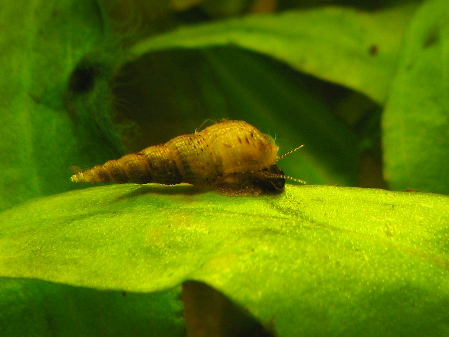

जल घोंघाRed-rimmed Melania
Melanoides tuberculata · Thiaridae · MOL-0007

- Scientific name
- Melanoides tuberculata (O.F. Müller, 1774)
- Family
- Thiaridae
- Hindi
- जल घोंघा
- Status here
- native
- IUCN
- not evaluated
When to look कब देखें
Present all year.
जल घोंघा / Red-rimmed Melania
Melanoides tuberculata (O.F. Müller, 1774) — Thiaridae
जल घोंघा (रेड-रिम्ड मेलानिया / नुकीला घोंघा) — पूर्वी उत्तर प्रदेश के तालाबों के तलों, सिंचाई नहरों, जल निकासी नालियों और धीमी गति से बहने वाली नदियों के किनारों पर पाया जाने वाला एक बहुत ही छोटा और प्रचुर मात्रा में मिलने वाला मीठे पानी का घोंघा (small pointed freshwater snail) है। इसका खोल लंबा, शंक्वाकार (conical/spiral) और नुकीला होता है, जिसकी लंबाई केवल 10 से 25 मिमी होती है। इसके मटमैले भूरे रंग के खोल पर गहरे लाल-भूरे रंग के धब्बे या पट्टियाँ (distinctive reddish-brown spots/bands) बनी होती हैं। यह घोंघा तालाब के कीचड़ में धंसकर रहता है और शैवाल तथा जैविक मलबे को खाता है। सार्वजनिक स्वास्थ्य (public health significance) की दृष्टि से यह प्रजाति बहुत महत्वपूर्ण है; यह कई प्रकार के हानिकारक परजीवी चपटे कृमियों (liver flukes) का मध्यवर्ती मेजबान (intermediate host) है, जो मनुष्यों और पशुओं में संक्रमण पैदा कर सकते हैं।
Quick Identification त्वरित पहचान
| Feature | Description |
|---|---|
| Shell Shape | Elongated, turreted, conical spiral shell; height around 15–25 mm, width 5–8 mm |
| Shell Texture | Hard, sculpted with fine vertical ribs and spiral ridges |
| Colouration | Light brown, greyish-yellow, or tan, marked with distinctive reddish-brown dots and streaks aligned with the spiral |
| Operculum | Small, thin, tear-shaped, dark brown lid that can pull deep inside the shell |
| Hiding Habit | Burrows into mud or silt during the day; climbs rocks and vegetation at night |
Field tip: Scoop up a handful of soft, dark mud from the shallow edge of an irrigation channel in Basti. Rinse the mud away in water; you will find numerous tiny, pointed, screw-like brown snails with reddish spots crawling slowly on your hand. The female reproduces parthenogenetically and is shown in the field tip.
Morphology आकारिकी
Biometrics (typical measurements of adults in the northern Indian plains):
| Measurement | Range |
|---|---|
| Shell height | 15–25 mm |
| Shell width (at base) | 5–8 mm |
| Number of whorls | 10–12 whorls |
| Aperture height | 5–7 mm |
| Average weight | 100–300 mg |
Adult Snail:
- Shell Structure: Highly elongated (turreted) shell with a pointed apex. It has 10 to 12 distinct, rounded whorls. The surface is hard, covered with vertical ribs crossed by spiral ridges, creating a warty texture. The aperture is relatively small and oval.
- Colouration: Light brown or greyish, with a series of distinct reddish-brown spots and flame-like bands running along the spiral ridges (the "red-rimmed" trait).
- Body: Pale grey to black, with a long, extendable snout (proboscis) and a pair of long, thin tentacles with eyes at their bases.
Behaviour & Ecology व्यवहार और पारिस्थितिकी
- Benthic Grazer: Feeds constantly by scraping microalgae, diatoms, and organic detritus from muddy sediment, playing an important role in cleaning pond bottom debris.
- Parthenogenetic Breeding: The species is primarily parthenogenetic, meaning females can reproduce without fertilization by males. They give birth directly to live, miniature crawling juveniles (ovoviviparous) rather than laying eggs. This allows a single female to establish a massive colony quickly.
- Benthic Burrowing: Highly adapted to burrowing into the top 1–2 cm of soft silt. During the day, they remain buried to avoid heat and predators, emerging at night to forage on the surface of rocks, concrete canal walls, and waterweed stems.
Life Cycle / Phenology जीवन चक्र
- Reproduction: Breeds year-round in the warm Gangetic climate.
- Developmental biology: Females carry the developing embryos inside a specialized brood pouch in their body.
- Birth: She releases 10 to 40 fully formed, free-crawling juveniles (0.8–1.2 mm shell height) per brood.
- Growth: Juveniles grow fast, reaching sexual maturity in 3 to 6 months. They can live for 2 to 3 years.
Host Plants or Prey आहार
Primary food sources:
- Algae: Benthic diatoms, green film algae, and organic detritus.
- Plants: Soft decaying leaves of Hydrilla and water lilies.
Predators / Natural Enemies शत्रु
- Fish: Bottom-feeding fish like the striped catfish (Mystus tengara) and Mrigal carp (Cirrhinus cirrhosus) consume them.
- Birds: Small wading birds search muddy margins, swallowing small snails.
- Insects: Larvae of fireflies and predatory water beetles attack and consume them.
Agricultural / Human Relevance कृषि प्रासंगिकता
Public Health and Veterinary Significance:
- Intermediate Host: Melanoides tuberculata is a key intermediate host for several species of parasitic flatworms (trematodes/flukes), including Centrocestus formosanus and Haplorchis pumilio.
- Transmission Cycle: The fluke larvae (cercariae) leave the snail and infect freshwater fish. When humans, dogs, or livestock eat raw or undercooked fish, or drink contaminated water, they contract liver and intestinal flukes, causing liver damage and gastrointestinal illness.
- Control indicator: In Basti, monitoring the population of this snail in canals near livestock washing areas is important for preventing fluke diseases in village buffaloes.
Expected Locally स्थानीय रूप से अपेक्षित
Not a field record. Written from published accounts for eastern Uttar Pradesh. No confirmed local sighting yet — if you have seen it, that is what the atlas needs.
अभी तक स्थानीय पुष्टि नहीं। यह विवरण प्रकाशित स्रोतों से है, किसी अवलोकन से नहीं।
A very common resident throughout the Basti district, especially abundant in the mud-silt beds of irrigation canals, village drainage channels, and shallow oxbow margins of the Kuwano and Rapti rivers in the Harraiya, Vikramjot, and Basti blocks. They are easily collected in large numbers from irrigation outlets year-round.
Distribution वितरण
Global range: Native to subtropical and tropical regions of Africa and southern Asia; widely introduced and invasive in North and South America due to the aquarium trade.
In India: Widespread in all freshwater basins and plains across the country.
In Uttar Pradesh: Abundant state-wide in all agricultural and river districts.
In Basti district / eastern UP: Common across all blocks in slow water channels.
Research Questions शोध प्रश्न
Anyone can investigate these | कोई भी इन प्रश्नों की जाँच कर सकता है
- How many pointed snails can be collected from a single scoop (approx. 1 liter) of canal-edge mud in Basti? — Count and record local densities.
- Do red-rimmed snails crawl faster on concrete canal walls compared to natural muddy banks? — Measure and compare crawling speeds.
- What is the average shell length of mature female snails carrying live young in their brood pouches? — Examine collected specimens.
- Do local ducks or farm chickens actively eat these snails when they forage along pond edges? — Monitor bird feeding behaviors.
- Does the population count of these snails drop in canals during the coldest winter weeks of January? / क्या जनवरी के सबसे ठंडे हफ्तों के दौरान नहरों में इन घोंघों की संख्या कम हो जाती है? — Monitor weekly populations from November to February.
Similar Species मिलती-जुलती प्रजातियाँ
| Species | How to tell apart | comparison |
|---|---|---|
| Indian Apple Snail (Pila globosa) | Much larger (50–70 mm); round, ball-like green shell; lays white egg masses | घोंघा — बहुत बड़ा आकार, गोल हरा खोल |
| Freshwater Pond Snail (Lymnaea luteola) | Shell is thin, amber-colored, egg-shaped with a short pointed tip; lacks spiral ridges | ताल घोंघा — पतला अंडाकार खोल, पीला-भूरा रंग |
| Ramshorn Snail (Indoplanorbis exustus) | Shell is flat, coiled like a rope (planorboid); lacks a pointed spire; red blood | रामशॉर्न घोंघा — चपटा कुंडलित खोल, नुकीला नहीं |
Field rule: Small, screw-like conical shell (15–25 mm) with 10–12 whorls, light brown with distinctive reddish spots, crawling on muddy canal beds, is the Red-rimmed Melania.
Taxonomy & Classification वर्गीकरण
Original description. Otto Friedrich Müller described the Red-rimmed Melania as Nerita tuberculata in 1774 in his Vermium Terrestrium et Fluviatilium (Vol. 2, p. 191). The type locality was Coromandel Coast, India. Olivier established the genus Melanoides in 1804. The genus name Melanoides is derived from the Greek melas (black/dark) and eidos (resemblence/form). The specific name tuberculata refers to the warty/ridged texture of the shell.
Subspecies. Monotypic — no subspecies are currently recognised.
Family and order placement. Placed in the order Sorbeoconcha, superfamily Cerithioidea, family Thiaridae (thiarid snails), subfamily Thiarinae.
Phylogenetic notes. Melanoides tuberculata represents a highly successful lineage of parthenogenetic caenogastropods, exhibiting high tolerance to salinity, low oxygen, and temperature variations, aiding its global spread.
IUCN status rationale. Not evaluated (NE) by the IUCN Red List. It is extremely abundant and secure throughout its global range.
Photo Gallery फोटो गैलरी
References संदर्भ
- Müller, O. F. (1774). Vermium Terrestrium et Fluviatilium. Havniae et Lipsiae, Vol. 2, p. 191. [original description]
- Subba Rao, N. V. (1989). Handbook: Freshwater Molluscs of India. Zoological Survey of India, Calcutta.
- Preston, H. B. (1915). The Fauna of British India, including Ceylon and Burma — Mollusca. Taylor and Francis, London.
- Pointier, J. P. (2001). Invading Freshwater Snails of the Neotropics. Malacologia.
- World Register of Marine Species (2024). Melanoides tuberculata Caenogastropoda details.
- GBIF Occurrence Data — Melanoides tuberculata, India (2010–2025).
Source file: species/fauna/mollusks/red_rimmed_melania.md